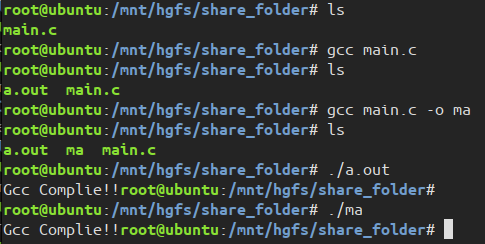

嵌入式实践实习
嵌入式实践实习知识
大二下时长一周半多半周的嵌入式实习，由粤嵌的工程师教授知识。
环境及工具：Ubuntu 18.04，arm-linux-gcc 5.4.0，粤嵌GEC6818开发板
以下是此次实习中get到的一下知识以及遇到的一些问题。
2023.05.09
gcc : c语言编译器
g++ : c++编译器
gdb : c/c++调试器
binutils : 二进制工具集
MinGW : MinGW 是让Windows 用户可以用上 GNU 工具，比如GCC。
Cygwin : Cygwin 提供完整的类Unix 环境，Windows 用户不仅可以使用GNU 工具，理论上Linux 上的程序只要用Cygwin 重新编译，就可以在Windows 上运行。
- 如果程序只用到C/C++ 标准库，可以用MinGW 或Cygwin 编译。
- 如果程序还用到了POSIX API，则只能用Cygwin 编译。
cmd 输入 sysdm.cpl 打开环境变量设置
cygwin64 和 MinGW 的 gcc 和 g++ 只能有一个能使用，不能同时使用。
通过修改环境变量的优先级 顺序从上到下，这里使用 cygwin64 的 gcc 和 g++ 如下：
在Linux系统中，可执行文件没有统一的后缀，系统从文件的属性来区分可执行文件和不可执行文件。而gcc则通过后缀来区别输入文件的类别，下面介绍gcc所遵循的部分约定规则。
.c 为后缀的文件，C语言源代码文件；
.a 为后缀的文件，是由目标文件构成的库文件；
.C .cc 或 .cxx 为后缀的文件，是C++源代码文件；
.h 为后缀的文件，是程序所包含的头文件；
.i 为后缀的文件，是已经预处理过的C源代码文件；
.m 为后缀的文件，是Objective-C源代码文件；
.o 为后缀的文件，是编译后的目标文件；
.s 为后缀的文件，是汇编语言源代码文件；
.S 为后缀的文件，是经过预编译的汇编语言源代码文件
sudo：super user do 超级用户执行 ；su：switch user 切换用户。
sudo su：当前用户暂时申请 root 权限，输入的是当前用户密码。
sudo -s：执行环境变数中的 SHELL 所指定的 shell ，或是 /etc/passwd 里所指定的 shell，输入当前用户的密码。
su 用户名:：用户名为空时默认为 root 用户，申请切换 root 用户，需要 root 用户的密码，ubuntu 中默认没有设置 root 用户的密码，第一次使用需要自行设置，sudo passwd root 设置 root 用户密码。
su -用户名：
-
如果加入了 - 参数，那么是一种 login-shell 的方式，意思是说切换到另一个用户 <user_name> 之后，当前的 shell 会加载 <user_name> 对应的环境变量和各种设置；
-
如果没有加入 - 参数，那么是一种 non-login-shell 的方式，意思是说我现在切换到了 <user_name>，但是当前的 shell 还是加载切换之前的那个用户的环境变量以及各种设置。
由下图可知，su 和 -su 都需要输入 root 用户的密码，su 执行后目录为当前用户的目录，- su 执行完后目录是根目录，两者都没有时间限制。
由下图可知，使用 sudo 时输入的密码为当前用户的密码，sudo -s 执行后不加载用户变量，目录为当前目录 ，sudo -i 执行完目录为根目录，sudo su 这种用法好像可以舍弃。。。。
另外，用户名的颜色即上面的绿色和灰色好像没什么作用，颜色可以通过命令修改。
gcc 编译的文件 or gcc 编译的文件 -o 生产的文件名
./ 生成的文件名 即可输出信息。

df -h 查看内存
ls -a 查看当前目录下的文件，相比直接 ls 还显示了隐藏文件。
ls -l 查看某一个目录会得到一个7个字段的列表。
文件类型
-
- 表示普通文件；
- d 表示目录；
- l 表示链接文件；
- p 表示管理文件；
- b 表示块设备文件；
- c 表示字符设备文件；
- s 表示套接字文件；
文件名称，字体颜色
-
如果是一个符号链接，那么会有一个 “->" 箭头符号，后面根一个它指向的文件名；
-
灰白色表示普通文件；
-
亮绿色表示可执行文件；
-
亮红色表示压缩文件；
-
灰蓝色表示目录；
-
亮蓝色表示链接文件；
-
亮黄色表示设备文件；
chmod 权限值 文件名：设置用户对文件的权限。
Linux/Unix 的文件调用权限分为三级 : 文件所有者（Owner）、用户组（Group）、其它用户（Other Users）。
1 | [ugoa...][[+-=][rwxX]...][,...] |

符号模式
| who | 用户类型 | 说明 |
|---|---|---|
u |
user | 文件所有者 |
g |
group | 文件所有者所在组 |
o |
others | 所有其他用户 |
a |
all | 所有用户, 相当于 ugo |
| Operator | 说明 |
|---|---|
+ |
为指定的用户类型增加权限 |
- |
去除指定用户类型的权限 |
= |
设置指定用户权限的设置，即将用户类型的所有权限重新设置 |
| 模式 | 名字 | 说明 |
|---|---|---|
r |
读 | 设置为可读权限 |
w |
写 | 设置为可写权限 |
x |
执行权限 | 设置为可执行权限 |
X |
特殊执行权限 | 只有当文件为目录文件，或者其他类型的用户有可执行权限时，才将文件权限设置可执行 |
s |
setuid/gid | 当文件被执行时，根据who参数指定的用户类型设置文件的setuid或者setgid权限 |
t |
粘贴位 | 设置粘贴位，只有超级用户可以设置该位，只有文件所有者u可以使用该位 |
八进制语法
文件或目录的权限位是由 9 个权限位来控制，每三位为一组。
| # | 权限 | rwx | 二进制 |
|---|---|---|---|
| 7 | 读 + 写 + 执行 | rwx | 111 |
| 6 | 读 + 写 | rw- | 110 |
| 5 | 读 + 执行 | r-x | 101 |
| 4 | 只读 | r– | 100 |
| 3 | 写 + 执行 | -wx | 011 |
| 2 | 只写 | -w- | 010 |
| 1 | 只执行 | –x | 001 |
| 0 | 无 | — | 000 |
eg：765 表示所有者的权限为 rwx(4+2+1)，用户组的权限为 rw(4+2+0)，其他用户的权限为 rx(4+0+1)。
tar -xvf xxx.tar.gz 文件目录
tar -zcvf xxx.tar.gz a.txt b.txt c.txt 将 a.txt b.txt c.txt 打包压缩为一个名为 xxx.tar.gz 压缩包。
tar cvf xxx.tar xxx 打包一个tar
tar xvf xxx.tar xxx 解开一个tar
tar cvzf xxx.tar.gz xxx 打包压缩一个 tar
tar zxvf xxx.tar.gz 解压一个tar
tar -tf 误解压文件 | xargs rm -rf
tar -tf 是列出该压缩文件中的文件列表，xargs rm -rf 则是根据前面的文件列表来删除文件。
在早期，Linux 和 Unix 系统用一种叫做 tar（Tape ARchive，磁带归档）的工具来打包文件。但它只能打包不能压缩。后来 gzip（GNU Zip）就出现了，通过将 tar 和 gzip 结合起来，形成 tar.gz 格式。
tar 格式在保留文件权限、所有权和时间戳。
2023.5.10
删除文件的骚操作：
rm 文件1 文件2 … 删除多个文件
*rm .txt 删除 .txt 这一类文件
rm xxx 删除固定字母开头的文件*
rm * -rf 删除文件夹下面所有文件
Activator 软件，连接开发板，传输在 Ubuntu 下交叉编译后生成的文件到开发板的系统下。
1 | 输入: rx 文件名 |
执行文件时需要先查看文件是否可执行。执行以下命令让文件权限变为可读可写可执行文件
1 | chmod 777 文件名 |
2023.5.11
1 | man man 查看所有手册 |
文件描述符本质
函数 open() 的返回值，是一个整型 int 数据。这个整型数据，实际上是内核中的一个称为 fd_array 的数组的下标：
打开文件时，内核产生一个指向 file{} 的指针，并将该指针放入一个位于 file_struct{} 中的数组fd_array[] 中，而该指针所在数组的下标，就被 open() 返回给用户，用户把这个数组下标称为文件描述符，如上图所示。
结论：
- 文件描述符从 0 开始，每打开一个文件，就产生一个新的文件描述符（一般是返回一个最小未使用的描述符）。
- 可以重复打开同一个文件，每次打开文件都会使内核产生新结构体（每一个描述符拥有自己独立的资源互不影响），并得到不同的文件描述符。
- 由于系统在每个进程开始运行时，都默认打开了一次键盘、两次屏幕，因此0、1、2描述符分别代表标准输入、标准输出和标准出错三个文件（两个硬件）。
1 | int main() |
从上面可以得出虽然打开了同个文件，但是得到了不同文件描述。
在 Ubuntu 下直接 gcc 编译文件跟 arm-linux-gcc 编译文件是不一样的，后者为交叉编译。
GEC6818开发板屏幕的色深是 32 位的，32 位色深的屏幕一般被称为真彩屏，或 1600万色屏。色深决定了一个像素点所能表达的颜色的丰富程度，色深越大，色彩表现力越强。
虽然LCD设备本质上也可以看作是一个文件，在文件系统中有其对应的设备节点，可以像普通文件一样对其进行读写操作（read/write），但由于对字符设备的读写操作是以字节流的方式进行的，因此除非操作的图像尺寸刚好与屏幕尺寸完全一致，如下图所示，图片的宽高与LCD的宽高完全一致，否则将会画面会乱。
1 |
|
像上述代码这样，直接将数据通过设备节点 /dev/fb0 写入的话，这些数据会自动地从LCD映射内存的入口处（对应LCD屏幕的左上角）开始呈现，并且会以线性的字节流形式逐个字节往后填充，除非图像尺寸与显示器刚好完全一致，否则显示是失败的。
一般而言，图像的尺寸大小是随机的，因此更方便的做法是为LCD做内存映射，将屏幕的每一个像素点跟映射内存一一对应，而映射内存可以是二维数组，因此就可以非常方便地通过操作二维数组中的任意元素，来操作屏幕中的任意像素点了。这里的映射内存，有时被称为显存。
如上图所示，将一块内存与LCD的像素一一对应：
- LCD上面显示的图像色彩，由其对应的内存的数据决定
- 映射内存的大小大于等于LCD的真实尺寸大小
- 映射内存的大小可以大于LCD的真实尺寸，有利于优化动态画面（视频）体验
将原来代码修改如下：
1 | // 3. 映射内存来进行LCD屏幕显示 |
2023.5.12
实战项目：
要求：使用C语言代码编写菜单选项并实现其对应的功能
例：
--------欢迎使用…操作系统-------（使用switch语句）
1.德国国旗
2.法国国旗
3.瑞士国旗
4.日本国旗(公式:(x-x0)(x-x0) + (y-y0)(y-y0) = r*r)
5.土耳其国旗（星星可以不用显示，选做加分）
6.各国国旗幻灯片形式播放（1s）
7.退出（break/return）
2023.5.13
图片深度，一般有8bit、16bit、24bit 和 32bit等。
8bit：
取值范围：0~255，总共可显示 256 种颜色。
16bit：
24bit：
32bit：Alpha透明度 + 24 bit，ARGB。
为什么不使用常见的 jpg文件呢，因为 jpg文件为了便于能在网络上传播，经过了压缩处理，直接读取数据的话是读不到颜色数据的，需要经过解码才可以读出颜色数据；而 BMP文件是微软公司推出的一种图片数据格式，这种文件未经过压缩处理，读取颜色数据的时候无需进行解码，因此它的文件大小一般也很大。
BMP位图格式
位图的文件头 Bitmap File Header (14 bytes)：
因此检查前两个字节即可得知此文件是否为 bmp文件，第一个字节为 0x42，第二个字节为 0x4D。
位图信息数据头 DIB Header (54 bytes)：

bmp文件存储的数据为高位在前低位在后，这就是为什么前面第一个字节反而是 0x42，第二个字节为 0x4D，内容42 4D 对应了ASCII表的 ”BM“两个字母。
如一张 10 * 10的bmp图像
在文件中数据顺序如下：另外 **bmp存储颜色数据为 BGR 顺序。**如下列红色画出 0000 ff表示的是红色。
因此在读取 bmp文件的 颜色数据后需要将 BGR通道转为 ARGB通道显示在 lcd屏幕(32bit)；若为 24bit的 lcd屏幕，则转为 RGB通道即可；另外由于 bmp文件数据是高位在前低位在后，直接读取转换显示完图像是倒置的，需要将颜色数据从尾开始读取才可正常显示。
2023.5.15
使用U盘为开发板传输文件：
如果 U盘是 fat32文件系统格式的，U盘可以直接挂载(mount)到到开发板。
- 在开发板系统中进入中 /mnt/udisk 可看到插入U盘的信息；
如果 U盘是 NTFS格式的，系统不会自动完成挂载，可以通过手动挂载，将 U盘挂载到 /mnt/udisk/ 目录下，然后通过该目录找到U盘。
1 | 输入命令： |
2023.5.16
播放音乐和视频
音频或视频都通过某一个规则进行压缩和解码，我们的程序可以通过调用播放器来实现压缩和解码的过程，我们的程序主要用于控制播放、暂停、快进、快退等的一些操作即可。
开发板中默认有一个播放器 madplay 但是它只能用于播放音频文件MP3，不可以播放视频文件。因此可以从外部移植一个 mplayer 到开发板中，mplayer 则可以进行播放音频、视频文件
1.检查开发板中是否已经存在播放器 ( /bin/ /usr/bin/) which madplay / find -name madplaya如果不存在则手动移植 (复制)进去下载到mplayer程序文件到开发板后需要给它赋予可执行权限
1 | chmod 111 mplayer |
在虚拟机里面输入命令 kill -l 可以查看当前系统可以用的信号
1 | $ kill -l |
1 | 9) SIGKILL 杀死某一个进程 |
1 | 注意:两个不同的播放器 |
视频：
1 | void send_cmd(int fifo_fd,char *cmd) //发送指令 |
2023.5.17-2023.5.18
项目整合模块
主界面：包含四个模块
-
电子相册V3
-
音乐播放器
-
视频播放器
-
游戏
选择第一个模块可以进入电子相册界面。进入程序的界面需要点击两次右上角才可退回主界面
电子相册界面包括：
- 手动播放：水平滑动和垂直滑动切换图片
- 循环播放：循环 2 次，循环后自动返回到电子相册界面；时间原因还未设置手动退出选项。
音乐播放器界面包括：
- 播放音乐
- 暂停音乐
- 上一首音乐
- 下一首音乐
视频播放器界面包括：
- 开始
- 暂停
- 继续
- 调高音量
- 调低音量
游戏界面 ：雷霆战机
总结
- 项目分模块写的时候需要考虑项目的耦合性，尽量封装成一个函数便于他人可直接调用；
- 编写代码时尽量少用全局变量，过多使用全局变量一方面会增加程序运行的内存，也会降低代码的耦合性，加大项目整合模块的难度；
- 若声明了全局变量，切忌在函数中再次声明定义同个变量，否则会导致不必要的麻烦；
- 目前的编程能力太弱了，有待提高，使用的代码都是很低级的并且重复性很高，后续应当通过许多编程小项目提高自己的编程能力。
sudo -i和sudo -s - 乌瑟尔 - 博客园 (cnblogs.com)
(49条消息) Linux-FrameBuffer双缓冲机制显示图像_fb双缓冲_干燥剂007860的博客-CSDN博客
https://blog.csdn.net/m0_57266121/article/details/118979056
(50条消息) 利用GEC6818屏幕 显示一张bmp图片_read(bmp_fd,&bpp,2);_三目条件的博客-CSDN博客